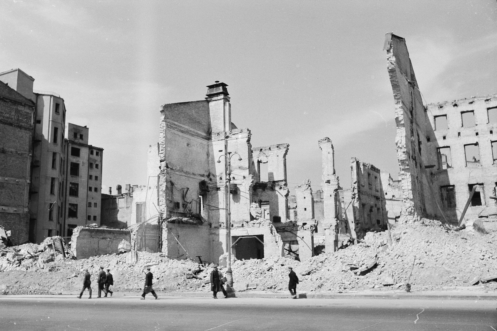

При князе Владимире Киев представлял собой три отдельных, удалённых друг от друга поселения (города):
Старый (Верхний), где содержались княжеские дворцы, Десятинная церковь, а позже и Софийский собор и Михайловский Златоверхий монастырь;
Ремесленно-торговый Подол;
Княжеский посёлок Берестовое, которое позже в качестве составной части вошло в Печерск с Киево-Печерской лаврой.
Верхний город соединялся с Подолом через летописный Боричев спуск, а с Печерском — через Ивановский путь, который начинался от Лядских ворот, возведённых на нынешнем Майдане Незалежности, и пролегал по современной Институтской улице.
Данная местность, а именно участок современного Крещатика от Майдана Незалежности до Европейской площади, называлась Перевесище. Находясь за пределами Киева, она была необитаемой и покрытой густым лесом, в котором местные князья, а позже и другие киевляне устраивали себе развлечения. Чаще всего это была охота на мелких зверей и птиц с помощью перевисов, другими словами — своеобразных сетей. Вот как их описывает преподаватель института благородных девиц Захарченко в своей книге «Киев теперь и прежде» (1888):
Перевесище — место княжеских охот и охоты, которые проводились, кроме различных других способов … и с помощью перевешивания сетками тех мест, куда загоняется добыча
XVI—XVIII века
В письменных источниках XVI—XVII веков этот же участок упоминается как «Евсейкова долина», а в документах XVIII века он же указан под названием «Пески».Много споров вызывает ещё одно название местности, «Крещатая долина», от которой, по мнению некоторых исследователей, образовалось сокращённое название «Крещатик». Есть свидетельства, что на холмах вдоль этой долины, начиная с XVII века, находились отдельные казацкие хутора, жители которых занимались с разрешения властей производством алкогольных напитков, а впоследствии здесь поселились первые жители Липок. Известный исследователь Киева Николай Закревский в своём фундаментальном труде «Летопись и описание города Киева» (М., 1858) отмечает:В конце Печерского пригород находится, образованный глубоким оврагом или долиной, узкий путь (Крещатицкий), но его нельзя обойти потому, что он собой соединяет все три города: как только поднимешься по нему, сразу же увидишь площадь, с полверсты величиной, а на ней большой и красивый Императорский дворец, на каменном фундаменте, построен по повелению императрицы Елизаветы…Украинский искусствовед Константин Шероцкий в своём путеводителе по Киеву, напечатанном в 1917 году, утверждает:Крещатик, получивший название от пересечения странных ложбин, где князья расставляли свои перевисы, или сети для ловли зверей («Перевесище»), ничего общего с крещением Руси не имеет…Похожую версию высказывает также искусствовед Сергей Эрнст на страницах редактируемого им путеводителя по Киеву, вышедшего в 1930 году:Современная главная улица города Киева представляет собой долину между Старым городом и Печерском. Долина эта была перекрещена другими долинами, или валами. Отсюда название: Перекрещенная или Крещатая долина, Крещатик.Современная исследовательница истории Киева Лидия Пономаренко подходит к этому спорному вопросу совсем с другой стороны. Она считает, что название «Крещатик» в конце XVIII века имела современная улица Набережно-Крещатицкая, по которой во времена князя Владимира киевляне шли к Днепру, чтобы добровольно или под принуждением принять в нём святое крещение. Улица начиналась тогда от Крещатицких ворот, построенных на месте нынешней Почтовой площади. От этих ворот и до нынешней Европейской площади проходил Крещатицкий путь.Киевовед Леликов считает, что названием «Крещатик» обозначались также урочище и источник в нём, где князь Владимир крестил, как об этом сообщает летопись, всех своих сыновей и на месте которого с 1802 года возвышается памятник Крещения Руси. Описывая в книге «Славные бубны за горами» своё путешествие в Киев, князь Долгорукий пишет:У подножия самой высокой горы на склонах Днепра поражает взгляд так называемый Крещатик. Это купель, в которой Владимир крестил киевлян. Она украшена памятником.Крещатиком называет это место и Николай Сементовский в своей книге «Киев и его достопримечательности», изданной в 1852 году. Поэтому, когда в 1830-х годах началась интенсивная застройка Крещатой долины, её начало со стороны Днепра уже называлось «Крещатик», а местность «Козье болото» именовалась Крещатицкой площадью.
Появление улицы
Отсчёт истории Крещатика как городской улицы многие исследователи начинают с 1797 года, когда в Киев из города Дубно перевели Контрактовую ярмарку. Николай Закревский утверждает:
В 1797 году не было здесь ни строений, и вообще все населённые места на Крещатике представляли собой ещё в конце прошлого века саму пустоту.
Контрактовая ярмарка должна была принести с собой значительное пополнение городской казны и тем самым способствовать дальнейшему развитию Киева. Тогдашний городской архитектор Андрей Меленский правильно определил перспективность этого события именно для Крещатой долины как артерии, объединяющей между собой все три части города, и связанность их с дорогой на город Васильков. Ведь путь к нему давно проходил вдоль ручья, вытекавшего из небольшого озера, которое тогда украшало местность в северной части нынешнего Майдана Незалежности. Ручей направлялся в район, где расположена Бессарабка, а уже дальше впадал в реку Лыбедь. После татаро-монгольского нашествия озеро превратилось в болотистую местность, которую назвали «Козье болото».
Когда началась застройка окружающей местности, власть сначала не возражала против существования здешнего небольшого рынка, где происходили цирковые представления и народные гуляния. Тем не менее в 1874 году его всё же перенесли на Бессарабскую площадь, чтобы на этом месте устроить сквер. Впоследствии в долине под застройку выделили 118 участков земли, которые в первую очередь отдавали представителям господствующего класса, а уже потом купцам, мещанам и мелким чиновникам. В 1797 году в Крещатой долине появляется первый дом, выполненный в классическом стиле — красивый двухэтажный каменный дворец помещика Онуфия Головинского.
XIX — начало XX века
Застройка Крещатика началась в конце XVIII — начале XIX века. Вначале застраивали участок от Конной (Европейской) площади до Прорезной улицы, преимущественно правую сторону. В 1803 году начали застраивать и левую. Тогда улица носила название Театральной (здесь находился первый в городе театр). Окончательные очертания улица приобрела в планах Киева 1837 года, её продлили до Бессарабской площади и дали название Крещатицкой. С 1869 года закрепилось название Крещатик.В 1876 году здесь построено здание Городской думы; в 1892 году проложена первая в Российской империи линия электрического трамвая, которая связывала Крещатик с Подолом.
До Великой Отечественной войны Крещатик был застроен зданиями, в основном, в три-четыре этажа, которые стояли сплошным фасадом. Ширина улицы составляла около 35 м.
Советское время
Довоенный период
В 1923 году Крещатик был переименован в улицу Воровского, в честь русского революционера польского происхождения, одного из первых советских дипломатов Вацлава Воровского (1871—1923). Историческое название улицы было восстановлено в 1937 году.После переноса столицы УССР в Киев началась массовая реконструкция улицы. Было заложено нескольких новых домов, большинство из которых остались недостроенными и были уничтожены во время войны. Среди объектов предвоенного строительства можно выделить универмаг (одно из немногих зданий на Крещатике, которое пережило войну). После 1935 года в архитектуру начали внедрять принципы «социалистического реализма», при этом было разрешено обратиться к народным традициям.В 1934 году на Крещатике демонтировали трамвайную линию. В 1936 году вместо трамваев пустили троллейбусы, при этом проезжая часть была расширена и покрыта асфальтом.
Оккупация города немцами
В августе 1941 года началась осада города немецкими войсками. Крещатик, как и большинство других киевских улиц, преграждали баррикадами, металлическими «ежами», мешками с песком, оборудовали места для зенитных пулемётов. 24 сентября 1941 года, через несколько дней после занятия Киева немецкими войсками, на Крещатике началась серия взрывов.Взрывы продолжались на протяжении двух недель, главная улица столицы Украины была уничтожена почти полностью. Целый месяц на Крещатике продолжались пожары. 3 ноября 1941 года была взорвана жемчужина украинской архитектуры — Успенский собор Киево-Печерской лавры. Лишь благодаря случайности немцам удалось разминировать Софию Киевскую, а также здание бывшей Центральной Рады.Согласно справке бывшего начальника инженерной службы штаба обороны Киева майора М. Чукарева «Инженерное обеспечение обороны Киева в 1941 г.», здания в городе минировали отступавшие части РККА. Первым был взорван «Детский мир» (архитектор Владислав Городецкий) на углу Крещатика и Прорезной, от взрывной волны сдетонировали боезапасы и в других зданиях. Взрывы и последовавший затем огненный смерч были настолько мощными, что центр города выгорел полностью и во время войны не восстанавливался. Через несколько дней, 27—29 сентября 1941 года, комендант Киева Курт Эберхард воспользовался поджогом Крещатика как формальным поводом для уничтожения евреев Киева в Бабьем Яру.Во время оккупации Киева в 1941—1943 годах немцы переименовали улицу в Айхгорнштрассе (в честь фельдмаршала Германа фон Айхгорна).

 путеводителя по Киеву, вышедшего в 1930 году:Современная главная улица города Киева представляет собой долину между Старым городом и Печерском. Долина эта была перекрещена другими долинами, или валами. Отсюда название: Перекрещенная или Крещатая долина, Крещатик.Современная исследовательница истории Киева Лидия Пономаренко подходит к этому спорному вопросу совсем с другой стороны. Она считает, что название «Крещатик» в конце XVIII века имела современная улица Набережно-Крещатицкая, по которой во времена князя Владимира киевляне шли к Днепру, чтобы добровольно или под принуждением принять в нём святое крещение. Улица начиналась тогда от Крещатицких ворот, построенных на месте нынешней Почтовой площади. От этих ворот и до нынешней Европейской площади проходил Крещатицкий путь.Киевовед Леликов считает, что названием «Крещатик» обозначались также урочище и источник в нём, где князь Владимир крестил, как об этом сообщает летопись, всех своих сыновей и на месте которого с 1802 года возвышается памятник Крещения Руси. Описывая в книге «Славные бубны за горами» своё путешествие в Киев, князь Долгорукий пишет:У подножия самой высокой горы на склонах Днепра поражает взгляд так называемый Крещатик. Это купель, в которой Владимир крестил киевлян. Она украшена памятником.Крещатиком называет это место и Николай Сементовский в своей книге «Киев и его достопримечательности», изданной в 1852 году. Поэтому, когда в 1830-х годах началась интенсивная застройка Крещатой долины, её начало со стороны Днепра уже называлось «Крещатик», а местность «Козье болото» именовалась Крещатицкой площадью.
путеводителя по Киеву, вышедшего в 1930 году:Современная главная улица города Киева представляет собой долину между Старым городом и Печерском. Долина эта была перекрещена другими долинами, или валами. Отсюда название: Перекрещенная или Крещатая долина, Крещатик.Современная исследовательница истории Киева Лидия Пономаренко подходит к этому спорному вопросу совсем с другой стороны. Она считает, что название «Крещатик» в конце XVIII века имела современная улица Набережно-Крещатицкая, по которой во времена князя Владимира киевляне шли к Днепру, чтобы добровольно или под принуждением принять в нём святое крещение. Улица начиналась тогда от Крещатицких ворот, построенных на месте нынешней Почтовой площади. От этих ворот и до нынешней Европейской площади проходил Крещатицкий путь.Киевовед Леликов считает, что названием «Крещатик» обозначались также урочище и источник в нём, где князь Владимир крестил, как об этом сообщает летопись, всех своих сыновей и на месте которого с 1802 года возвышается памятник Крещения Руси. Описывая в книге «Славные бубны за горами» своё путешествие в Киев, князь Долгорукий пишет:У подножия самой высокой горы на склонах Днепра поражает взгляд так называемый Крещатик. Это купель, в которой Владимир крестил киевлян. Она украшена памятником.Крещатиком называет это место и Николай Сементовский в своей книге «Киев и его достопримечательности», изданной в 1852 году. Поэтому, когда в 1830-х годах началась интенсивная застройка Крещатой долины, её начало со стороны Днепра уже называлось «Крещатик», а местность «Козье болото» именовалась Крещатицкой площадью. Контрактовая ярмарка должна была принести с собой значительное пополнение городской казны и тем самым способствовать дальнейшему развитию Киева. Тогдашний городской архитектор Андрей Меленский правильно определил перспективность этого события именно для Крещатой долины как артерии, объединяющей между собой все три части города, и связанность их с дорогой на город Васильков. Ведь путь к нему давно проходил вдоль ручья, вытекавшего из небольшого озера, которое тогда украшало местность в северной части нынешнего Майдана Незалежности. Ручей направлялся в район, где расположена Бессарабка, а уже дальше впадал в реку Лыбедь. После татаро-монгольского нашествия озеро превратилось в болотистую местность, которую назвали «Козье болото».
Когда началась застройка окружающей местности, власть сначала не возражала против существования здешнего небольшого рынка, где происходили цирковые представления и народные гуляния. Тем не менее в 1874 году его всё же перенесли на Бессарабскую площадь, чтобы на этом месте устроить сквер. Впоследствии в долине под застройку выделили 118 участков земли, которые в первую очередь отдавали представителям господствующего класса, а уже потом купцам, мещанам и мелким чиновникам. В 1797 году в Крещатой долине появляется первый дом, выполненный в классическом стиле — красивый двухэтажный каменный дворец помещика Онуфия Головинского.
Контрактовая ярмарка должна была принести с собой значительное пополнение городской казны и тем самым способствовать дальнейшему развитию Киева. Тогдашний городской архитектор Андрей Меленский правильно определил перспективность этого события именно для Крещатой долины как артерии, объединяющей между собой все три части города, и связанность их с дорогой на город Васильков. Ведь путь к нему давно проходил вдоль ручья, вытекавшего из небольшого озера, которое тогда украшало местность в северной части нынешнего Майдана Незалежности. Ручей направлялся в район, где расположена Бессарабка, а уже дальше впадал в реку Лыбедь. После татаро-монгольского нашествия озеро превратилось в болотистую местность, которую назвали «Козье болото».
Когда началась застройка окружающей местности, власть сначала не возражала против существования здешнего небольшого рынка, где происходили цирковые представления и народные гуляния. Тем не менее в 1874 году его всё же перенесли на Бессарабскую площадь, чтобы на этом месте устроить сквер. Впоследствии в долине под застройку выделили 118 участков земли, которые в первую очередь отдавали представителям господствующего класса, а уже потом купцам, мещанам и мелким чиновникам. В 1797 году в Крещатой долине появляется первый дом, выполненный в классическом стиле — красивый двухэтажный каменный дворец помещика Онуфия Головинского.